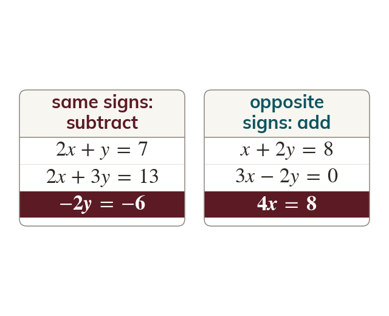

A third true equation
Adding or subtracting two true equations gives another true equation. Matching coefficients with the same sign: subtract. Equal but opposite coefficients: add.
Adding or subtracting two true equations produces a third equation that is also true. If a variable's coefficient is the same in both, subtracting it removes it; if the coefficients are equal but opposite, adding removes it.